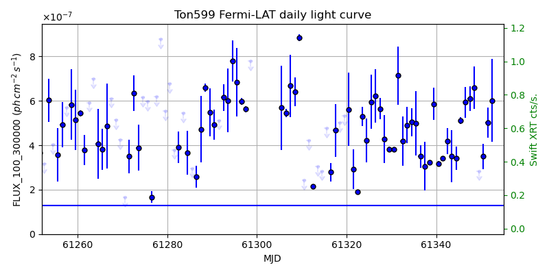
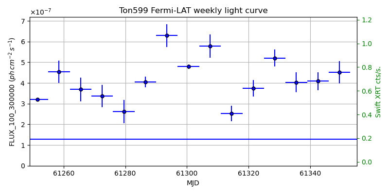
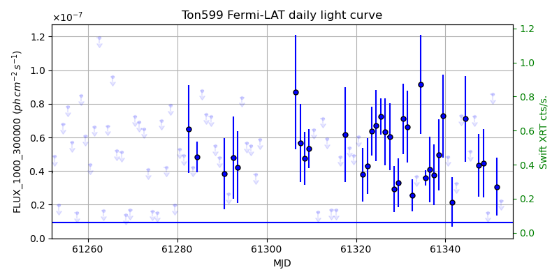
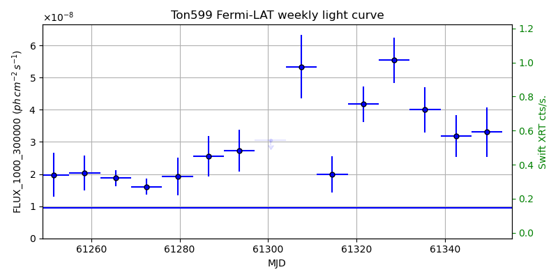

LAT Lightcurve site: https://fermi.gsfc.nasa.gov/ssc/data/access/lat/msl_lc/source/Ton_599
Swift site: https://www.swift.psu.edu/monitoring/source.php?source=1156+295
NED: Query
Time of last update of this page: UT: 2026-11-13 16:24 (MJD: 61357.683)
| Property | Value |
|---|---|
| R.A. | 11:59:31.92 |
| Dec. | 29:14:45.6 |
| z | 0.725 |
| 3FGL SpectrumType | LogParabola |
| 3FGL PL Index | |
| 3FGL Flux_100_300000 | 1.27e-07 1 / (s cm2) |
| 3FGL Flux_1000_300000 | 9.48e-09 1 / (s cm2) |
| 3FGL Flux >200 GeV | 6.90e-12 1 / (s cm2) |
| 3FGL Extrap. Crab >200 GeV | 0.03 |
| 3FGL Flux After EBL Absorption >200GeV | 4.08e-13 1 / (s cm2) |
| 3FGL EBL Crab Fraction >200GeV | 0.00 |

| MJD | dMJD | Flux | dFlux | Frac3FGL | FracCrab>200GeV | EBLFracCrab>200GeV |
|---|---|---|---|---|---|---|
| 61348.50 | 0.50 | 6.59e-07 | 9.55e-08 | 5.17 | 0.15 | 0.01 |
| 61349.50 | 0.50 | 2.84e-07 | 0.00e+00 | 0.00 | 0.00 | 0.00 |
| 61350.50 | 0.50 | 3.50e-07 | 5.69e-08 | 2.75 | 0.08 | 0.00 |
| 61351.50 | 0.50 | 5.02e-07 | 6.82e-08 | 3.94 | 0.12 | 0.01 |
| 61352.50 | 0.50 | 6.02e-07 | 1.86e-07 | 4.72 | 0.14 | 0.01 |

| MJD | dMJD | Flux | dFlux | Frac3FGL | FracCrab>200GeV | EBLFracCrab>200GeV |
|---|---|---|---|---|---|---|
| 61321.50 | 3.50 | 3.74e-07 | 4.05e-08 | 2.94 | 0.09 | 0.01 |
| 61328.50 | 3.50 | 5.20e-07 | 4.14e-08 | 4.08 | 0.12 | 0.01 |
| 61335.50 | 3.50 | 4.03e-07 | 4.78e-08 | 3.16 | 0.09 | 0.01 |
| 61342.50 | 3.50 | 4.09e-07 | 4.32e-08 | 3.21 | 0.09 | 0.01 |
| 61349.50 | 3.50 | 4.51e-07 | 5.34e-08 | 3.54 | 0.10 | 0.01 |

| MJD | dMJD | Flux | dFlux | Frac3FGL | FracCrab>200GeV | EBLFracCrab>200GeV |
|---|---|---|---|---|---|---|
| 61348.50 | 0.50 | 4.45e-08 | 2.04e-08 | 4.70 | 0.14 | 0.01 |
| 61349.50 | 0.50 | 1.53e-08 | 0.00e+00 | 0.00 | 0.00 | 0.00 |
| 61350.50 | 0.50 | 8.56e-08 | 0.00e+00 | 0.00 | 0.00 | 0.00 |
| 61351.50 | 0.50 | 3.08e-08 | 1.73e-08 | 3.25 | 0.09 | 0.01 |
| 61352.50 | 0.50 | 2.24e-08 | 0.00e+00 | 0.00 | 0.00 | 0.00 |

| MJD | dMJD | Flux | dFlux | Frac3FGL | FracCrab>200GeV | EBLFracCrab>200GeV |
|---|---|---|---|---|---|---|
| 61321.50 | 3.50 | 4.18e-08 | 5.51e-09 | 4.40 | 0.13 | 0.01 |
| 61328.50 | 3.50 | 5.54e-08 | 7.09e-09 | 5.84 | 0.17 | 0.01 |
| 61335.50 | 3.50 | 4.00e-08 | 7.07e-09 | 4.22 | 0.12 | 0.01 |
| 61342.50 | 3.50 | 3.19e-08 | 6.48e-09 | 3.36 | 0.10 | 0.01 |
| 61349.50 | 3.50 | 3.30e-08 | 7.61e-09 | 3.48 | 0.10 | 0.01 |
--------------------------------------------------------- Using user-supplied coords: 11:59:31.92 29:14:45.6 2000 --------------------------------------------------------- FLWO UT night of: 2026-11-14 Local Sid. @ Midnight: 03:09 Sunset (-15.0) (local, UT): 18:35 01:35 Sunrise (-15.0) (local, UT): 05:42 12:42 Moonrise (local, UT): Moonset (local, UT): 20:50 03:50 Moon phase: 0.22 --------------------------------------------------------- AzTime LSID UT Obj_el Obj_az Mn_el Mn_az Sep. --------------------------------------------------------- 18:35 21:44 01:35 -21.1 328.2 20.1 218.2 115.0 19:05 22:14 02:05 -24.1 334.5 16.0 223.7 115.1 19:35 22:44 02:35 -26.6 341.3 11.6 228.6 115.3 20:05 23:14 03:05 -28.2 348.4 6.9 233.2 115.4 20:35 23:44 03:35 -29.1 355.9 2.0 237.3 115.6 21:05 00:14 04:05 -29.1 3.4 -2.2 241.2 115.7 21:35 00:44 04:35 -28.4 10.8 -9.0 244.8 115.9 22:05 01:14 05:05 -26.8 18.0 -14.6 248.2 116.1 22:35 01:44 05:35 -24.4 24.8 -20.4 251.4 116.3 23:05 02:14 06:05 -21.4 31.2 -26.2 254.5 116.5 23:35 02:44 06:35 -17.8 37.0 -32.1 257.5 116.7 00:05 03:14 07:05 -13.7 42.4 -38.1 260.6 117.0 00:35 03:45 07:35 -9.2 47.2 -44.2 263.8 117.2 01:05 04:15 08:05 -2.9 51.7 -50.2 267.1 117.5 01:35 04:45 08:35 1.2 55.8 -56.3 270.9 117.7 02:05 05:15 09:05 6.3 59.5 -62.4 275.3 118.0 02:35 05:45 09:35 11.9 63.0 -68.4 281.1 118.3 03:05 06:15 10:05 17.7 66.2 -74.2 289.9 118.6 03:35 06:45 10:35 23.6 69.2 -79.6 306.2 118.9 04:05 07:15 11:05 29.6 72.1 -83.2 343.5 119.2 04:35 07:45 11:35 35.7 74.9 -82.1 35.1 119.5 05:05 08:15 12:05 41.9 77.7 -77.4 61.2 119.8 05:35 08:45 12:35 48.2 80.4 -71.8 73.4 120.1 05:42 08:52 12:42 49.6 81.0 -70.5 75.2 120.1 --------------------------------------------------------- Dark hours >55 deg.: 0.00